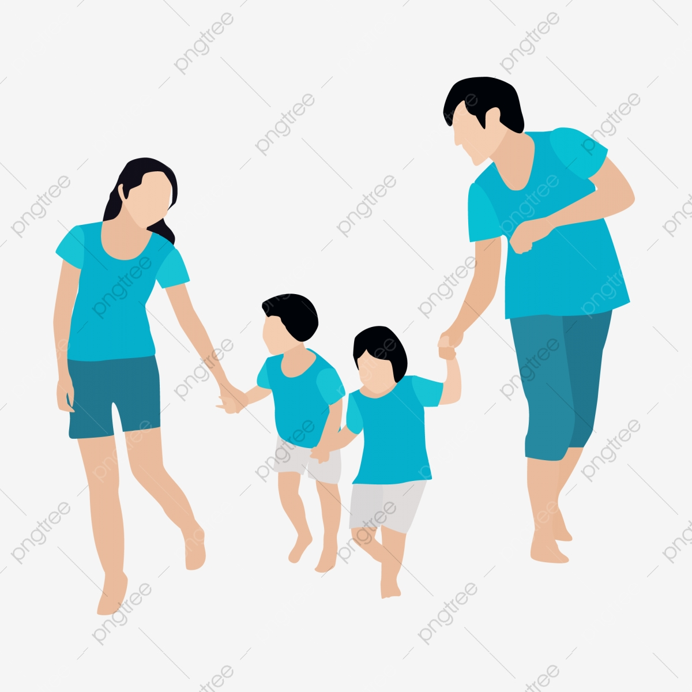

Entendemos por familia al grupo primario del ser humano. Esto es así ya que la familia actúa como el primer grupo de personas con las cuales el ser humano que nace entra en contacto. La familia es el grupo responsable de cuidar y proteger al bebé pero también de integrarlo al mundo y de hacer que, a través de la enseñanza de prácticas, reglas y pautas de convivencia, pueda adaptarse exitosamente a las necesidades de la sociedad. La composición de la familia varía de sociedad en sociedad, de país en país, de región en región, pudiendo en algunos casos ser muy numerosa y en muchos otros limitarse solamente a los integrantes centrales o nucleares: padre, madre e hijos. Convencionalmente se entiende por familiares secundarios a los tíos, primos, abuelos y sobrinos. Luego, también podemos mencionar a la familia política, es decir aquella que se establece en base a relaciones no sanguíneas: cuñado, nuera, suegros, yerno, ahijados, etc.
de importancia